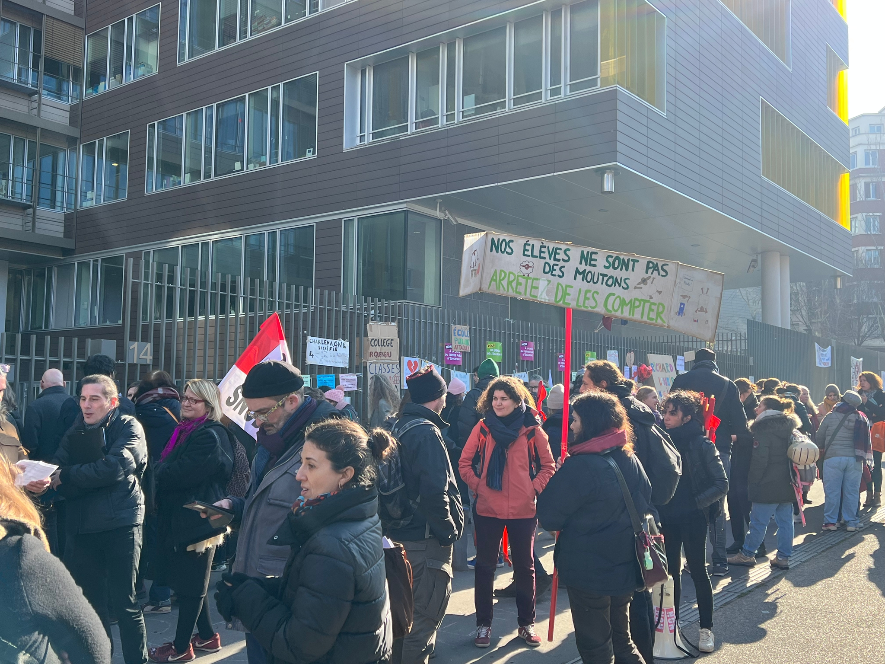
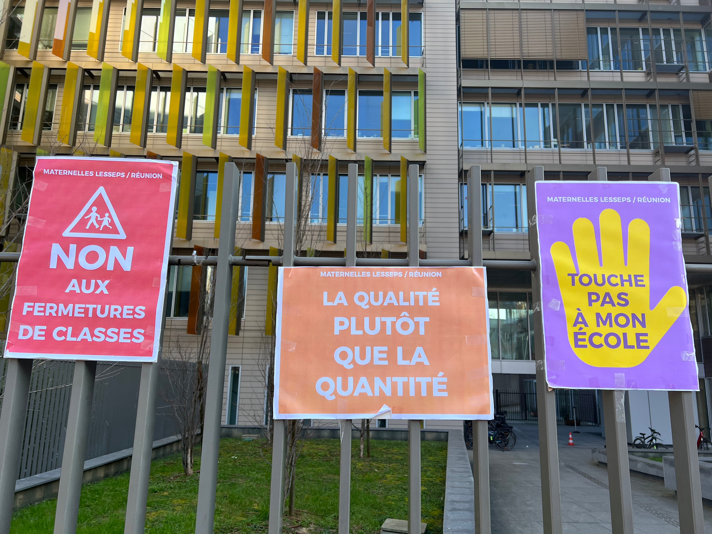

Paris perd ses enfants
Coût élevé des logements ou recherche d’un autre cadre de vie, ce sont les raisons qui ont poussé 123 000 parisiens ont quitté la capitale ces dix dernières années. Cette décision a des conséquences immédiates sur les écoles de Paris, le rectorat de Paris vient d’annoncer la fermeture de 110 classes de primaires et de 68 classes de maternelles en septembre prochain.
Publié le 15/02/2023 19:08  Temps de lecture : 8 min.
Temps de lecture : 8 min.
Classe de CM1 du 13ème arrondissement de Paris, le 14 février 2023. © Emma Hervier
La capitale française connue pour sa beauté architecturale et son art de vivre à la française perd des habitants. Selon l’Institut national de la statistique et des études économiques, la métropole a perdu 122 000 habitants en 10 ans. Pour preuve, l’année dernière, près de 4000 enfants ont disparu des bancs de leurs écoles parisiennes. Pour la rentrée prochaine, l’académie de Paris a annoncé que ce phénomène allait continuer et que 3000 écoliers allaient manquer à l’appel. La baisse de sa démographie peut s’expliquer par plusieurs aspects comme la baisse de natalité ainsi que l’exode urbain que subit la capitale. Une fuite de ses habitants qui a pris de l’ampleur ces dernières années avec l’importance toujours plus grande du télétravail et l’envie de trouver un cadre de vie plus vivable à la suite de l’enfermement des confinements successifs. Et ces travailleurs emmènent souvent leur famille avec eux.
Une décision qui va faire réagir car cela ne va pas dans le sens de l’allègement des effectifs. À l’heure où la grande majorité des professeurs préfère des effectifs d’élèves plus faibles pour faciliter l’apprentissage individualisé. Et ceux encore plus dans les zones prioritaires ou le souhait de l’association de parents d’élèves adhérent (FCPE) est de limiter les classes à 19 élèves.
Retour sur le rassemblement des représentants d’écoles devant le rectorat de Paris

Enseignants, directeurs et parents d’élèves se retrouvent devant le rectorat de Paris pour manifester contre la fermeture des classes le 14 février 2023. © Emma Hervier
Le mardi 14 février, en face du rectorat de Paris, avait lieu une réunion des représentants d’écoles afin de se faire entendre dans le cadre du projet de suppressions de classes progressives dans le XIXème arrondissement. Sur place, une centaine de manifestants, parents d'élèves et professeurs sont présents afin de faire entendre leurs revendications. On y retrouve des affiches de lutte sur des barreaux, des panneaux portés fièrement allant à l’encontre des décisions du rectorat, tout cela dans une ambiance pesante. On ressent une grande implication de la part des personnes présentes pour lutter contre une cause commune. Le rectorat a reçu des délégations pour chaque école ayant des fermetures programmées. Ces dernières sont représentées par des groupes qui attendent tour à tour, devant le rectorat, un rendez-vous dans les bureaux pour pouvoir donner leurs avis sur la situation. A chaque sortie et entrée des groupes, des acclamations et des applaudissements se succèdent pour encourager ces derniers à tout donner pour avoir gain de cause.
Tous ne souhaitent qu’une chose : qu’aucune de toutes ces classes ne soit fermée. En pleine réflexion sur leur discours à venir, des professeurs et des parents d'élèves se mettent d’accord sur une prise de parole concise pour “sauver leur établissement”. Sauver dans le sens de promouvoir un apprentissage qualitatif. Car pour eux, cette mesure de fermeture des classes omet totalement les besoins spéciaux de beaucoup d’élèves. “Quand il s’agit d’un endroit ou il n’y a pas d’enfants qui ont des troubles de l’apprentissage, de problèmes de handicaps, 24 élèves cela fonctionne. Pour les endroits où une partie de la population est non-francophone,18 s’est déjà beaucoup”. Le 20ème arrondissement par exemple est désigné comme une zone prioritaire, un périmètre où l’éducation est plus compliquée à réaliser. Des enfants en difficultés, ces professeurs en connaissent. Pour Grégoire, l’un des membres du groupe de professeurs du 20ème arrondissement, supprimer les classes ne ferait qu’augmenter les inégalités. “Notre arrondissement est déjà sous tension, supprimer 17 classes ne ferait qu'accroître cette déstabilisation”.

Messages des représentants scolaires collés aux grilles du rectorat de Paris © Emma Hervier
Pour tous ces manifestants, la raison de la fermeture des écoles prise par le rectorat est liée à un argument simple : “il y a des effectifs de moins de 24 élèves dans un certain nombre d’écoles. Ces normes établies par Emmanuel Macron sont incontestables et le rectorat s’appuie sur ce quota pour justifier la fermeture des classes”. Pour Lucie, professeur dans le 14ème arrondissement, ces revendications ont peu de chance d’aboutir car “le rectorat justifie la suppression des classes par une baisse des effectifs. Ces fuites des familles vers la province et la banlieue, sont utilisées par le gouvernement pour faire passer en force cette décision.”
Un quota qui peut paraître raisonnable au premier abord mais qui selon eux ne favorise pas un apprentissage individualisé :“C’est une logique comptable appliquée de manière discriminatoire et non réfléchie. Dans nos écoles il y a beaucoup d’enfants en difficultés, les projets d’établissements ne peuvent pas se faire avec des effectifs importants”.
Ces fermetures créent un vrai déséquilibre. Et ceux par simplement pour l’école mais pour tout l’arrondissement. Chaque classe fermée entraîne un déplacement vers de nouveaux établissements. C’est du moins ce que pense Nicolas, professeur dans le 20ème arrondissement. “Moi je n’ai pas de fermeture dans mon école par exemple, mais par contre lorsqu’il y a des classes supprimées dans les classes de l’école voisine, je reçois énormément d'élèves !
Des arrondissements plus touchés que d’autres

L'Académie de Paris prévoit la fermeture de 187 classes dans 180 écoles maternelles et élémentaires d'ici la rentrée 2023. Les arrondissements du Nord-Est de Paris sont les plus impactés.
Le nombre d’élèves par classe est un critère régulièrement cité lorsqu’il s’agit des conditions de travail des enseignants. Les études faites sur le sujet montrent que moins le nombre d’élèves par enseignant est important, plus l’apprentissage est facilité. Dans la capitale, plusieurs arrondissements sont impactés suite aux suppressions des postes et des classes. Le Nord-Est de Paris soit le 18, le 19 et le 20ème arrondissement sont les plus touchés par ce phénomène. Dans les écoles, cette baisse des effectifs au sein des classes est flagrante et entraîne un climat de tension chez les enseignants qui se sentent de plus en plus submergés. Les élèves non-francophones, souvent présents en nombre dans les écoles du Nord de Paris, ont besoin de temps pour apprendre ainsi que d’une classe composée de peu d’élèves. Les enseignants ne peuvent pas toujours s’adapter à cause des programmes et des horaires imposés.
Des pétitions pour lutter contre la suppression des classes
touchepasamaclasse.fr
Afin de lutter contre ses fermetures de classes à Paris, plusieurs écoles ont lancé des pétitions sur les réseaux sociaux et sur Internet. Notamment l'école Rampal située dans le 19e arrondissement dont une classe est menacée pour la rentrée 2023. Cette initiative remporte un franc succès. De nombreux élus, professeurs et parents d’élèves ont déjà ratifié cette pétition qui compte à ce jour 573 signatures. La réponse du milieu éducatif public à la fermeture des classes semble donc être unanime. L’Etat ne doit pas supprimer des classes.